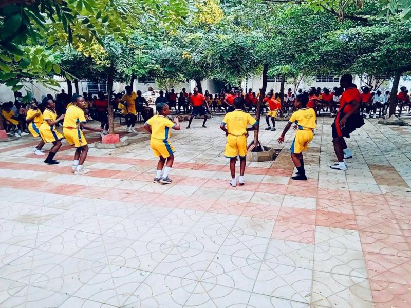
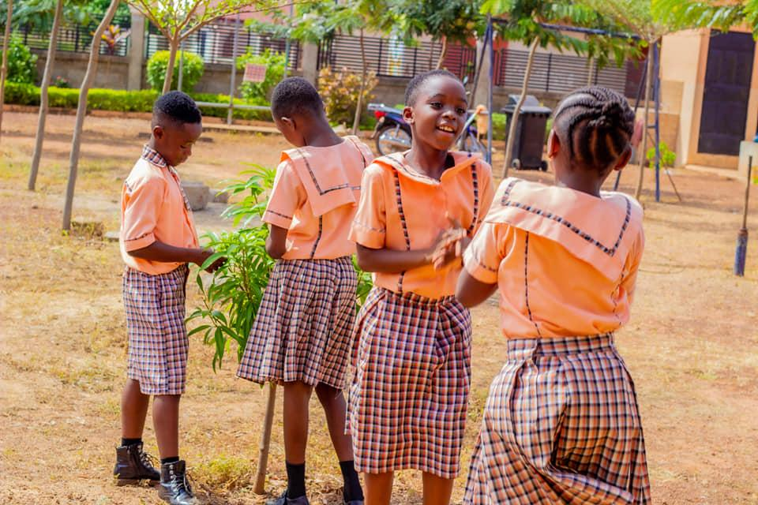
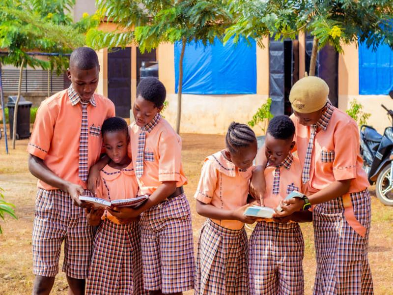
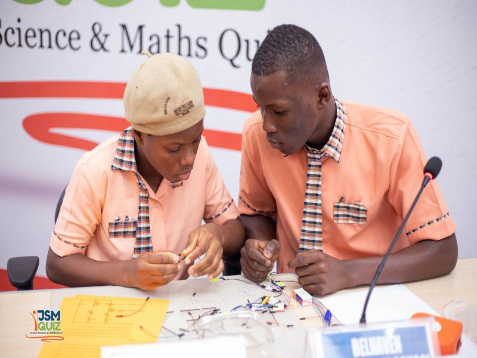

01 / FIRST DISCOVERIESPreschool
A warm introduction to learning through play, creativity and foundational skills. Space for small steps and wonderful discoveries.
Explore preschool ↗A PLACE TO LEARN. A PLACE TO BELONG.
A curious mind can go a long way. At Belhaven, we nurture the confidence, character and love of learning that help every child take their next step.
Growing together in Tamale.
Preschool · Primary · Junior High

THE JOY OF DISCOVERYThink. Dream.
Believe. Achieve.
WELCOME TO BELHAVEN
Children flourish when they feel seen, encouraged and free to explore.
Our school in Gurugu/Jisonayilli, Tamale brings academic learning and character development together. Guided by Montessori principles, we encourage independence, creativity and critical thinking through hands-on experiences.
From early discoveries to bigger ambitions, we help learners grow intellectually, socially and morally — with a sense of belonging along the way.
Get to know us ↗ROOM TO GROW, AT EVERY STAGE
Three stages. One shared belief in
what your child can become.

01 / FIRST DISCOVERIESA warm introduction to learning through play, creativity and foundational skills. Space for small steps and wonderful discoveries.
Explore preschool ↗
02 / STRONG FOUNDATIONSBuilding the knowledge, confidence and learning habits that help children ask questions, make connections and grow.
Explore primary ↗
03 / BIGGER POSSIBILITIESDeveloping critical thinking and academic excellence as learners prepare for their next chapter in education.
Explore junior high ↗Big ideas. Shared effort. Moments to be proud of.
THE BELHAVEN SPIRIT, IN ACTION
Learning takes on new meaning when children put it into practice. Our quiz teams have taken their curiosity, teamwork and determination onto the national stage.
One of three Northern Region schools to secure a place at the Junior Science and Maths Quiz National Championship.
Read the competition report ↗A 195-point opening victory against Effiduase Methodist “B”, followed by a spirited contest with Services Primary and JHS.
Read the match story ↗ALREADY PART OF THE FAMILY?
Access school fees, academic records and attendance through the existing guardian portal.
YOUR NEXT CHAPTER STARTS HERE
Choosing a school is personal. Speak with our team, ask your questions and arrange a visit to experience Belhaven for yourself.
Tell us which programme you’re interested in.
Contact the school to arrange a suitable time.
Our team can confirm availability, current fees and admission requirements.
A FEW HELPFUL ANSWERS
We are in the Gurugu/Jisonayilli area of Tamale, Ghana. Call 024 491 9825 for exact directions and to arrange a visit.
Contact the school directly for current fees, available places and the documents required for your child’s programme. Use the enquiry form above or call our team.
Our approach encourages children to explore, learn through hands-on experiences and develop independence. Speak with our team during a visit to learn how this works at each stage.
Existing parents and guardians can use the school’s guardian portal to access academic records, attendance and school fee information. Contact the school if you need help with your login.
A WARM WELCOME AWAITS